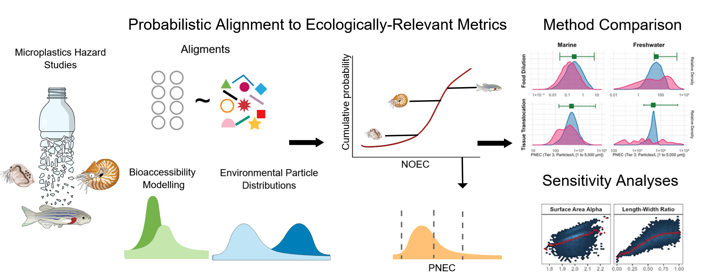

ToMEx 2.0 - Ecotoxicological Risk Assessment
Repository for the Journal of Hazardous Materials manuscript (Pre-print):
“A Probabilistic Risk Framework for Microplastics Integrating Uncertainty Across Toxicological and Environmental Variability: Development and Application to Marine and Freshwater Ecosystems.”
Authors: Scott Coffin, Lidwina Bertrand, Kazi Towsif Ahmed, Luan de Souza Leite, Win Cowger, Mariella Sina, Andrew Barrick, Anna Kukkola, Bethanie Carney Almroth, Ezra Miller, Andrew Yeh, Stephanie Kennedy, Magdalena M. Mair

Purpose of the assessment
- Develop PSSD++ thresholds for microplastics, propagating ERM alignment uncertainty, intra-species variability, and parameter uncertainty via Monte Carlo and Sobol sensitivity analysis.
- Compare aligned toxicity thresholds to environmental particle observations across marine and freshwater compartments.
- Provide supporting models (tissue translocation GLM) and illustrative materials explaining the alignment framework.
Repro workflow at a glance
- Option A (fastest): Download precomputed Monte Carlo and PSSD++ outputsfrom Zenodo and place them as listed under Large files; then knit
scripts/ToMEx2_EcoTox.Rmd. - Option B (full recompute): Run
scripts/monte carlo/EcoTox_MonteCarlo.Rmd(can exceed 12 hours; high RAM and multiple cores recommended) to generate aligned MC datasets and Sobol outputs, then knitscripts/ToMEx2_EcoTox.Rmd. - Environmental comparisons: run the scripts in
scripts/characteristics and NMDS/. - Translocation model: knit
scripts/translocation/translocation.Rmd. - Alignment walkthrough: knit
scripts/illustrative_example/ERM Illustrative Example.Rmd.
Key scripts and where manuscript components are produced
scripts/ToMEx2_EcoTox.Rmd— main analysis generating nearly all manuscript figures and tables (threshold tables, PNEC plots, SSD comparisons, etc.). Outputs figures tooutput/Manuscript_Figs, data tables tooutput/data, and threshold/PSDD++ objects todata/output/.scripts/monte carlo/EcoTox_MonteCarlo.Rmd— Monte Carlo ERM alignment, Sobol sensitivity, aligned dataset creation (sources for MC histograms and threshold distributions). Outputs toscripts/monte carlo/output/and selected figures tooutput/Manuscript_Figs/.scripts/characteristics and NMDS/*.R— environmental trait extraction and ordinations (ToMEx vs. field particles; Figure 2-type content). Consumesdata/input/Environmental_Data_Collection/00_Extraction_finished/and writes tooutput/Manuscript_Figs/characteristics and NMDS/.scripts/translocation/translocation.Rmd— GLM for tissue translocation probabilities (manuscript translocation section and figures). Outputs knit artifacts and plots toscripts/translocation/andoutput/Manuscript_Figs/translocation/.scripts/illustrative_example/ERM Illustrative Example.Rmd— didactic alignment example referenced in the text/SI.scripts/utils/— shared alignment, SSD, and data-prep functions used by Monte Carlo and PSSD++ workflows.package/tomex_functions.R— combined function set (alignment, SSD/PSSD++, tidying) assembled fromscripts/utils/*.package/test_tomex_functions.R— minimal beta test harness using the combined functions (small subset, reducednboot).assets/— figures used in the manuscript and supporting visuals.
Required inputs
- Toxicity database:
data/input/aoc_z_tomex2.RDS(originates from the ToMEx repository https://github.com/SCCWRP/ToMEx_AquaticOrganisms and theaq_mp_tox_shinyonboarding scripts; seescripts/monte carlo/readme.txtfor provenance). - Legacy/setup data:
data/input/aoc_setup.RDS,data/input/aoc_final.RDS(if present), gape size lists, and related reference files mirrored from ToMEx/aq_mp_tox_shiny. - Environmental observations:
data/input/Environmental_Data_Collection/00_Extraction_finished/(used by the characteristics/NMDS scripts). - Translocation data:
data/input/translocation_scored_2.xlsx(and the CSV copy) plusdata/input/aoc_z_tomex2.RDS. - MC reference files:
scripts/monte carlo/ref data/(e.g.,tomex2_input.rds,gape_size.csv) as noted inscripts/monte carlo/readme.txt.
Dependencies
Install these R packages (R Markdown/knitr required for knitting): - Core analysis (scripts/ToMEx2_EcoTox.Rmd): tidyverse, calecopal, DT, plotly, gridExtra, grid, wesanderson, ggtext, broom, knitr, kableExtra, viridis, ggrepel, scales, gt, ggsci, openxlsx, ggpubr, psych, Matrix, mc2d, trapezoid, reshape2, devtools, sciscales (install via devtools::install_github("christyray/sciscales")), and ssdtools version 0.3.7 (checked in-script). - Monte Carlo (scripts/monte carlo/EcoTox_MonteCarlo.Rmd): all of the above plus sensobol, truncnorm, ggdark, gtsummary, doParallel, doSNOW, tictoc. - Translocation (scripts/translocation/translocation.Rmd): readxl, caret, DALEX, skimr, ggeffects.
Large files (download from Zenodo or generate locally)
Some outputs are too large for GitHub and are .gitignored. Generate via the scripts or download from https://doi.org/10.5281/zenodo.16740504 and place with these names: - scripts/monte carlo/output/: sobol_results.rds, sobol_results_filtered.rds, results_df_sobol.rds, all_thresholds_sobol_filtered.rds, all_thresholds_sobol_long_filtered.rds, mat.rds, mat_filtered.rds, aoc_MC_sobol.rds, summary_stats_base_thresholds_sobol.rds/csv, simple_thresholds_table_sobol*.csv, simple_RSD.csv, sobol_time.txt. - data/output/: PSDDplusplusresults.rds, PNEC_summary_table_wide.rds, marine_alpha_thresholds.rds, tiered SSD files (tier1_2_*, tier3_4_*). - output/pssd_cache/ and output/pssd_debug/: cached and debug artifacts generated during PSSD++ runs.
How to reproduce the manuscript results
- Install the packages above (confirm
ssdtoolsis 0.3.7 andsciscalesis installed from GitHub). - Place inputs in
data/input/and MC reference files perscripts/monte carlo/readme.txt. - Choose Option A (Zenodo downloads) or Option B (run
scripts/monte carlo/EcoTox_MonteCarlo.Rmd) to populate MC outputs. - Knit
scripts/ToMEx2_EcoTox.Rmdto regenerate manuscript figures/tables, PSSD++ results, threshold summaries, and the supplemental workbook (output/data/supplemental_information.xlsx). - For environmental comparisons (trait representativeness, NMDS), run
scripts/characteristics and NMDS/. - For translocation GLM results referenced in the manuscript, knit
scripts/translocation/translocation.Rmd. - For the pedagogical alignment walkthrough cited in the manuscript/SI, knit
scripts/illustrative_example/ERM Illustrative Example.Rmd. - To beta-test the packaged functions, run
Rscript package/test_tomex_functions.R(uses small subset and reducednboot).
Notes
- Manuscript text: see the pre-print at https://papers.ssrn.com/sol3/papers.cfm?abstract_id=5440537.
- The main Rmd (
scripts/ToMEx2_EcoTox.Rmd) produces the manuscript visuals located inoutput/Manuscript_Figs/(e.g.,Figure5.jpg,Figure6_PNEC_compare_arranged_plot.jpg,figure1_a_alpha_combined_plot.jpg,figure2_bio_response_taxa.jpg). - Environmental data extractions (
data/input/Environmental_Data_Collection/) underpin comparisons to ToMEx particle traits; keep these synchronized with updates to the ToMEx source data when re-running analyses.
WORKFLOW FLOW DIAGRAM (Mermaid)
This diagram summarizes the end-to-end PSSD++ pipeline implemented in this script, from data import through probabilistic threshold derivation and aggregation.
PSSD++ Workflow Overview
``` mermaid flowchart TD
A[Start Script] –> B[Load Libraries] B –> C[Check & Enforce ssdtools v0.3.7] C –> D[Source Utility, SSD, PSSD, and Plotting Functions]
D –> E[Import & QC ToMEx-derived Toxicity Dataset] E –> E1[Apply Tier 0 Technical & Risk Filters] E1 –> E2[Compute Composite Assessment Factors]
E2 –> F[Generate MC Parameter Matrix
(Latin Hypercube Sampling)] F –> G[Visualize Parameter Distributions]
G –> H[MC-SIM Alignment
(MC_sim_align_parallel)] H –> I[Aligned MC-Simulation Dataset]
I –> J{ERM Type}
J –>|Food Dilution| K1[Construct Food Dilution Datasets] J –>|Tissue Translocation| K2[Construct Tissue Translocation Datasets]
K1 –> L[Stratify by Environment
(Freshwater / Marine)] K2 –> L
L –> M[Select Tier 3/4 Data]
M –> N[make_all_pSSDs()] N –> N1[Parallel Loop
Tier × Environment × ERM] N1 –> N2[Probabilistic SSD Fitting] N2 –> N3[Monte Carlo Uncertainty Propagation] N3 –> N4[Derive HC5 / HC10 PNECs] N4 –> N5[Generate & Save PSSD / PNEC Figures] N5 –> N6[Cache Results to Disk]
N6 –> O[Aggregate PNECs Across Runs] O –> P[Summarized PNEC Output Table]
P –> Q[End]